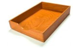

Outlook : Ranger ses mails au clavier

Les gourous de la gestion d’information, de Robert Scoble à Merlin Mann, distinguent les filers et les pilers : pour gérer leurs mails les filers ont soixante dossiers, les pilers deux ou trois. L’idée des pilers étant de s’appuyer sur des outils de recherche performants pour retrouver l’info. Je suis devenu un piler après avoir lu cet article et vu cette conférence.
J’ai donc déplacé le contenu de mes 147 dossiers dans 1 seul nommé Archive, et traité mon Inbox jusqu’à 0 avec ces 2 dossiers supplémentaires : Action et Hold.
Pour accélérer le traitement de l’Inbox avec Outlook (2003 et plus), voici comment créer un raccourci clavier pour déplacer les mails sélectionnés dans un répertoire. 5 minutes chrono :
Créer une signature électronique
Cette étape est nécessaire pour lancer des macros Outlook lorsque le niveau de
sécurité n’est pas au plus bas. Il suffit de lancer SELFCERT.EXE qui doit se
trouver sous Program Files\Microsoft Office\Office, de taper votre nom (j’ai
mis mes initiales) et de faire OK.
Créer une macro
Dans Outlook, faites Outils > Macro > Macros, tapez MoveToArchive puis Créer. L’éditeur VB s’ouvre, profitez-en pour créer toutes vos macros de déplacement d’un coup en copiant-collant le code de ce fichier : MoveToFolder.vba (d’après Chewy)
Pour affecter votre signature électronique à ce projet, dans l’éditeur VB faites Outils > Signature électronique et choisissez celle que vous avez créée à la 1ère étape. Ça y est, vous pouvez quitter l’éditeur VB.
Lui affecter un raccourci clavier
Dans Outlook cliquez-droit sur une de vos barres de boutons et faites
Personnaliser, onglet Commandes, catégorie Macros. Vos macros
apparaissent dans la partie droite, prenez MoveToArchive et faites-la
glisser sur la barre de boutons. Cliquez-droit sur le nouveau bouton, changez
le nom pour &X; et choisissez Texte seul pour ce bouton.
Voilà, si vous sélectionner un mail dans votre Inbox et faites Alt+X, le mail est déplacé dans Archive. Si la lettre que vous avez choisie est déjà affectée à un menu ou un bouton, il faut d’abord soit supprimer le & du nom de ce menu/bouton, soit choisir une autre lettre.
Maintenant, à vous de vider votre Inbox !